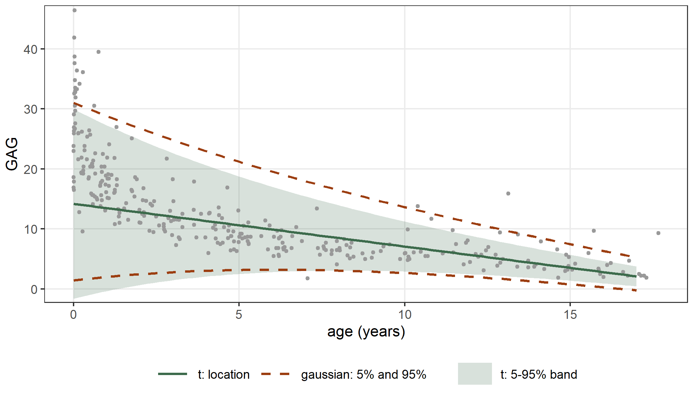
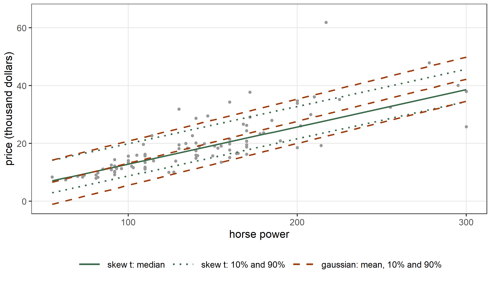
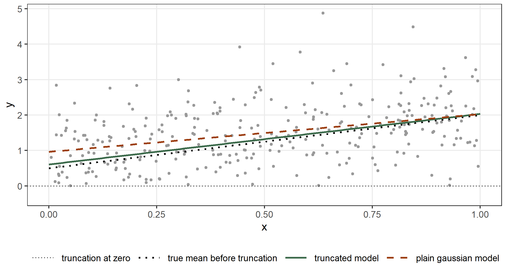
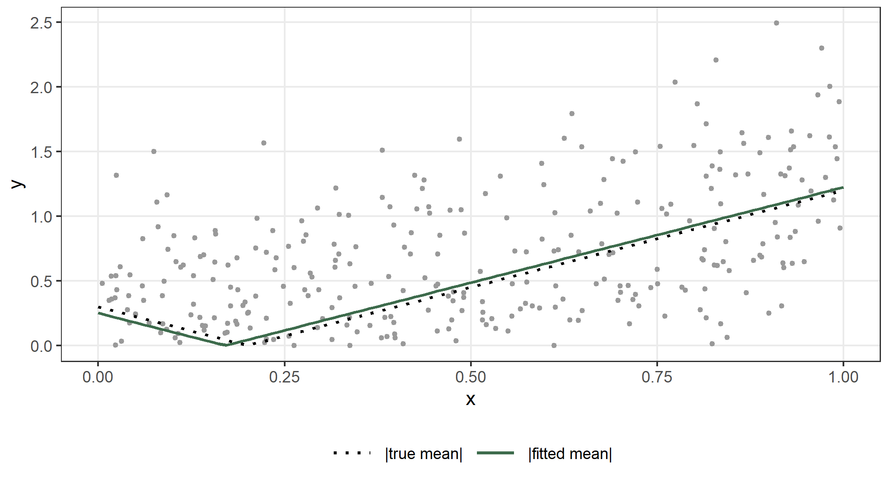

data(GAGurine, package = "MASS")
fit_hg <- statmod(GAG ~ Age | sigma ~ Age, distrib = gaussian1_distrib(),
data = GAGurine)
summary(fit_hg)
#> A statmod fit
#>
#> Call: statmod(formula = GAG ~ Age | sigma ~ Age, distrib = gaussian1_distrib(),
#> data = GAGurine)
#>
#> Distribution: gaussian1 Observations: 314
#>
#> === mu [identity link]
#>
#> Parametric terms
#> estimate se z p lower upper
#> (Intercept) 16.23 0.5342 30.39 < 1e-16 15.19 17.28
#> Age -0.8072 0.04338 -18.61 < 1e-16 -0.8922 -0.7222
#>
#> === sigma [log link]
#>
#> Parametric terms
#> estimate se z p lower upper
#> (Intercept) 2.198 0.05603 39.22 < 1e-16 2.088 2.307
#> Age -0.09921 0.00746 -13.3 < 1e-16 -0.1138 -0.08459
#>
#> 95% intervals, bayesian variance
#> conditional log-likelihood -970.058113 effective df 4.00
#> cAIC 1948.116 cBIC 1963.114
#> fitted in 1.78 s
#> inner max |grad|/se 5.2e-15 min eigen 0.094
#> outer max |grad|/se 1.1e-14 min eigen 0.3
fit_ht <- statmod(GAG ~ Age | sigma ~ Age, distrib = student_t1_distrib(),
data = GAGurine)
summary(fit_ht)
#> A statmod fit
#>
#> Call: statmod(formula = GAG ~ Age | sigma ~ Age, distrib = student_t1_distrib(),
#> data = GAGurine)
#>
#> Distribution: student t1 Observations: 314
#>
#> === mu [identity link]
#>
#> Parametric terms
#> estimate se z p lower upper
#> (Intercept) 14.19 0.3968 35.76 < 1e-16 13.41 14.97
#> Age -0.7103 0.02935 -24.2 < 1e-16 -0.7678 -0.6527
#>
#> === sigma [log link]
#>
#> Parametric terms
#> estimate se z p lower upper
#> (Intercept) 1.842 0.09609 19.17 < 1e-16 1.654 2.031
#> Age -0.133 0.0145 -9.169 < 1e-16 -0.1614 -0.1046
#>
#> === nu [log link]
#>
#> Parametric terms
#> estimate se z p lower upper
#> (Intercept) 0.9613 0.1839 5.228 1.718e-07 0.6009 1.322
#>
#> 95% intervals, bayesian variance
#> conditional log-likelihood -930.977075 effective df 5.00
#> cAIC 1871.954 cBIC 1890.701
#> fitted in 1.16 s
#> inner max |grad|/se 1.3e-15 min eigen 0.063
#> outer max |grad|/se 8.1e-07 min eigen 0.255 Distributions
In the previous chapters the distribution of the response was gaussian, Poisson, binomial, gamma or negative binomial. The argument distrib of statmod() accepts every distribution of the distributions7 package, and the parameters of a distribution are the parameters that the formula models: distrib@params lists them, and each one can have an equation, as sigma had in Section 3.3. This chapter shows the families that the earlier chapters do not use. They describe responses with heavy tails, with asymmetry, with values in the unit interval and with many zeros. After them come the wrappers that change a family (truncated(), folded() and transformation()), the wrapper that holds a parameter at a known value (fixed()), and a distribution that the user defines by writing its density.
The references of this chapter maximize the likelihood, and the default criterion of statmod() is REML, which estimates the dispersion parameters by integrating out the coefficients of the means (Section 3.1). We therefore refit with outer_criterion = ml() whenever we compare the estimates with those of another package.
5.1 Heavy tails
We return to the GAGurine data of Section 4.3. A few children have a concentration of glycosaminoglycans far above that of the other children of their age, and the spread of the concentration falls with the age. We give sigma a linear equation in the age, and we compare a gaussian response with a Student \(t\) response. The Student \(t\) distribution has a location \(\mu\), a scale \(\sigma\) and a number of degrees of freedom \(\nu\). A small \(\nu\) gives heavy tails, and as \(\nu\) grows the distribution approaches the gaussian (Lange, Little, and Taylor 1989). The parameter nu has the log link, and we leave it without an equation, so that statmod() estimates it as a constant.
The estimate of \(\log\nu\) is 0.961, so \(\hat\nu = 2.62\). We read the interval of \(\nu\) with confint(), which maps the interval of the coefficient back to the parameter:
ci_ht <- confint(fit_ht)
ci_ht[ci_ht$parameter == "nu", ]
#> parameter term coefficient estimate se lower
#> nu:(Intercept) nu linpar (Intercept) 0.9613239 0.1838961 0.6008941
#> upper
#> nu:(Intercept) 1.321754
c(gaussian = AIC(fit_hg), student_t = AIC(fit_ht))
#> gaussian student_t
#> 1948.116 1871.954The interval of \(\log\nu\) runs from 0.60 to 1.32, so \(\nu\) lies between 1.8 and 3.7. A gaussian distribution, with \(\nu = \infty\), is far outside this interval. The AIC of the \(t\) model is 76 units smaller than the AIC of the gaussian model.
The same model in gamlss
The package gamlss fits the same model with its family TF (Rigby and Stasinopoulos 2005). It maximizes the likelihood, so we compare it with the fit of statmod() under ml(). This model has no penalty, so the criterion ml() integrates no coefficient out of the likelihood, and the estimates are those of the joint maximum likelihood. The default stopping rule of gamlss is loose (the relative change of the deviance below 0.001), and we tighten it:
fit_ht_ml <- statmod(GAG ~ Age | sigma ~ Age, distrib = student_t1_distrib(),
data = GAGurine, outer_criterion = ml())
gl_ht <- gamlss::gamlss(GAG ~ Age, sigma.formula = ~ Age,
family = gamlss.dist::TF, data = GAGurine,
control = gamlss::gamlss.control(n.cyc = 200,
c.crit = 1e-10,
trace = FALSE))
cmp_ht <- rbind(
statmod_ml = c(coef(fit_ht_ml)$mu, coef(fit_ht_ml)$sigma, coef(fit_ht_ml)$nu),
gamlss = c(coef(gl_ht, what = "mu"), coef(gl_ht, what = "sigma"),
coef(gl_ht, what = "nu")))
colnames(cmp_ht) <- c("mu:(Intercept)", "mu:Age", "sigma:(Intercept)",
"sigma:Age", "nu:(Intercept)")
cmp_ht
#> mu:(Intercept) mu:Age sigma:(Intercept) sigma:Age nu:(Intercept)
#> statmod_ml 14.13554 -0.7068181 1.843514 -0.1351722 0.9446592
#> gamlss 14.13554 -0.7068183 1.843514 -0.1351721 0.9446601
c(statmod_ml = as.numeric(logLik(fit_ht_ml)), gamlss = as.numeric(logLik(gl_ht)))
#> statmod_ml gamlss
#> -930.9614 -930.9614The two sets of estimates agree to five digits, and the log-likelihoods agree to the printed digits. With the default stopping rule of gamlss the agreement is about three digits, because that rule stops the iteration before the maximum. The fits with outer_criterion = NULL and with ml(marginal = "none") give the same estimates to about five digits, since there is nothing to integrate out.
Figure 7.2 shows the two fitted models. The band of each model runs from the 5% to the 95% quantile of the fitted distribution at each age, so it should leave out 10% of the children. We count the children outside each band:
mu_d <- predict(fit_ht, what = "mu", newdata = GAGurine)
sg_d <- predict(fit_ht, what = "sigma", newdata = GAGurine)
nu_d <- exp(coef(fit_ht)$nu[[1]])
out_t <- mean(GAGurine$GAG < mu_d + qt(0.05, nu_d) * sg_d |
GAGurine$GAG > mu_d + qt(0.95, nu_d) * sg_d)
mu_dg <- predict(fit_hg, what = "mu", newdata = GAGurine)
sg_dg <- predict(fit_hg, what = "sigma", newdata = GAGurine)
out_g <- mean(GAGurine$GAG < mu_dg + qnorm(0.05) * sg_dg |
GAGurine$GAG > mu_dg + qnorm(0.95) * sg_dg)
c(student_t = out_t, gaussian = out_g)
#> student_t gaussian
#> 0.10509554 0.07324841The band of the \(t\) model leaves out 10.5% of the children and the band of the gaussian model 7.3%. The \(t\) band is close to the 10% that the model predicts, and the gaussian band is wider than the data need. In the figure the upper limit of the gaussian band is above that of the \(t\) band for the youngest children, and the lower limit of the \(t\) band is below the gaussian one. The scale \(\sigma\) of the \(t\) model is not a standard deviation, and the children far above the others are covered by the tails of the distribution. The AIC of the gaussian model is much larger, so the similar bands do not make the two models equal.

The degrees of freedom with an equation
The parameter nu can have an equation like mu and sigma. The tails may be heavier for some ages than for others, so we let \(\log\nu\) depend on the age:
crit_e <- reml(hessian = "expected")
fit_ht0 <- statmod(GAG ~ Age | sigma ~ Age, distrib = student_t1_distrib(),
data = GAGurine, outer_criterion = crit_e)
summary(fit_ht0)
#> A statmod fit
#>
#> Call: statmod(formula = GAG ~ Age | sigma ~ Age, distrib = student_t1_distrib(),
#> data = GAGurine, outer_criterion = crit_e)
#>
#> Distribution: student t1 Observations: 314
#>
#> === mu [identity link]
#>
#> Parametric terms
#> estimate se z p lower upper
#> (Intercept) 14.2 0.3979 35.68 < 1e-16 13.42 14.98
#> Age -0.7108 0.02945 -24.14 < 1e-16 -0.7685 -0.6531
#>
#> === sigma [log link]
#>
#> Parametric terms
#> estimate se z p lower upper
#> (Intercept) 1.844 0.09581 19.24 < 1e-16 1.656 2.032
#> Age -0.1327 0.01444 -9.188 < 1e-16 -0.161 -0.1044
#>
#> === nu [log link]
#>
#> Parametric terms
#> estimate se z p lower upper
#> (Intercept) 0.9628 0.1834 5.25 1.524e-07 0.6033 1.322
#>
#> 95% intervals, bayesian variance
#> conditional log-likelihood -930.984577 effective df 5.00
#> cAIC 1871.969 cBIC 1890.716
#> fitted in 1.28 s
#> inner max |grad|/se 1.1e-14 min eigen 0.063
#> outer max |grad|/se 6.8e-07 min eigen 0.25
fit_ht1 <- statmod(GAG ~ Age | sigma ~ Age | nu ~ Age,
distrib = student_t1_distrib(), data = GAGurine,
outer_criterion = crit_e)
summary(fit_ht1)
#> A statmod fit
#>
#> Call: statmod(formula = GAG ~ Age | sigma ~ Age | nu ~ Age, distrib = student_t1_distrib(),
#> data = GAGurine, outer_criterion = crit_e)
#>
#> Distribution: student t1 Observations: 314
#>
#> === mu [identity link]
#>
#> Parametric terms
#> estimate se z p lower upper
#> (Intercept) 13.04 0.3428 38.03 < 1e-16 12.37 13.71
#> Age -0.6381 0.02295 -27.8 < 1e-16 -0.6831 -0.5931
#>
#> === sigma [log link]
#>
#> Parametric terms
#> estimate se z p lower upper
#> (Intercept) 2.294 0.1246 18.41 < 1e-16 2.05 2.539
#> Age -0.2196 0.02296 -9.564 < 1e-16 -0.2646 -0.1746
#>
#> === nu [log link]
#>
#> Parametric terms
#> estimate se z p lower upper
#> (Intercept) 2.422 0.7094 3.415 0.0006383 1.032 3.813
#> Age -0.1742 0.05929 -2.938 0.0033070 -0.2904 -0.05796
#>
#> 95% intervals, bayesian variance
#> conditional log-likelihood -923.890935 effective df 6.00
#> cAIC 1859.782 cBIC 1882.278
#> fitted in 3.85 s
#> inner max |grad|/se 2e-05 min eigen 0.062
#> outer max |grad|/se 4.1e-06 min eigen 0.02The criterion of these two fits is reml(hessian = "expected"). The default REML criterion evaluates the curvature of the log-likelihood with the observed information, and for a \(t\) distribution with small \(\nu\) the observed information of the mean is not positive at the observations far from the location. The criterion then has no value at some of the points that the search visits, and the model with an equation for nu ends with the state not converged of Section 1.10. The expected information of the \(t\) distribution is positive at every point, and the two fits above reach the state converged.
The coefficient of the age in the equation of \(\log\nu\) is -0.174: the degrees of freedom fall with the age, and the tails are heavier for older children. We compare the two models with the likelihood ratio of the marginal log-likelihoods, as in Section 4.5. Both fits integrate the same coefficients of the mean, and they use the same criterion:
l0_ht <- logLik(fit_ht0, type = "marginal")
l1_ht <- logLik(fit_ht1, type = "marginal")
lr_ht <- 2 * (as.numeric(l1_ht) - as.numeric(l0_ht))
lr_ht
#> [1] 12.43494
pchisq(lr_ht, df = 1, lower.tail = FALSE)
#> [1] 0.000421377
ages <- data.frame(Age = c(1, 9, 17))
predict(fit_ht1, what = "nu", newdata = ages)
#> [1] 9.4708287 2.3512160 0.5837099The statistic is 12.4, with a p-value of 0.0004. The fitted \(\nu\) is 9.5 at one year of age and 0.58 at 17 years. The value of \(\nu\) for the oldest children is below one, which is a distribution with heavier tails than the Cauchy distribution (\(\nu = 1\)).
A degrees of freedom parameter at the boundary
When the data have gaussian tails, the likelihood increases with \(\nu\) up to infinity, and no finite estimate exists. We draw 400 observations from a gaussian distribution with rstatmod() and we fit a Student \(t\) model:
set.seed(1)
xb <- data.frame(x = runif(n = 400))
sim_b <- rstatmod(y ~ x | sigma ~ 1, distrib = gaussian1_distrib(), data = xb,
par = list(mu = c(1, 2), sigma = log(0.5)))
fit_bt <- statmod(y ~ x | sigma ~ 1, distrib = student_t1_distrib(),
data = sim_b$data)
summary(fit_bt)
#> A statmod fit
#>
#> Call: statmod(formula = y ~ x | sigma ~ 1, distrib = student_t1_distrib(),
#> data = sim_b$data)
#>
#> Distribution: student t1 Observations: 400
#>
#> === mu [identity link]
#>
#> Parametric terms
#> estimate se z p lower upper
#> (Intercept) 1.079 0.05478 19.7 < 1e-16 0.9715 1.186
#> x 1.793 0.09675 18.54 < 1e-16 1.604 1.983
#>
#> === sigma [log link]
#>
#> Parametric terms
#> estimate se z p lower upper
#> (Intercept) -0.6206 0.03544 -17.51 < 1e-16 -0.6901 -0.5511
#>
#> === nu [log link]
#>
#> Parametric terms
#> estimate se z p lower upper
#> (Intercept) 20.82 10030 0.002076 0.9983 -19640 19680
#>
#> 95% intervals, bayesian variance
#> conditional log-likelihood -318.328078 effective df 4.00
#> cAIC 644.656 cBIC 660.622
#> fitted in 560 ms
#> inner max |grad|/se 3.6e-06 min eigen 0.13
#> outer max |grad|/se 2.4e-08 min eigen 1
fit_bg <- statmod(y ~ x | sigma ~ 1, distrib = gaussian1_distrib(),
data = sim_b$data)
summary(fit_bg)
#> A statmod fit
#>
#> Call: statmod(formula = y ~ x | sigma ~ 1, distrib = gaussian1_distrib(),
#> data = sim_b$data)
#>
#> Distribution: gaussian1 Observations: 400
#>
#> === mu [identity link]
#>
#> Parametric terms
#> estimate se z p lower upper
#> (Intercept) 1.079 0.05478 19.7 < 1e-16 0.9715 1.186
#> x 1.793 0.09675 18.54 < 1e-16 1.604 1.983
#>
#> === sigma [log link]
#>
#> Parametric terms
#> estimate se z p lower upper
#> (Intercept) -0.6206 0.03544 -17.51 < 1e-16 -0.6901 -0.5511
#>
#> 95% intervals, bayesian variance
#> conditional log-likelihood -318.328078 effective df 3.00
#> cAIC 642.656 cBIC 654.631
#> fitted in 40 ms
#> inner max |grad|/se 2.1e-15 min eigen 0.13
#> outer max |grad|/se 1.1e-09 min eigen 1
exp(coef(fit_bt)$nu)
#> (Intercept)
#> 1102569830
cert_bt <- statmod_certificate(fit_bt)
cert_bt$state
#> [1] "boundary"
cert_bt$boundary
#> [1] "nu/(Intercept)"
c(student_t = AIC(fit_bt), gaussian = AIC(fit_bg))
#> student_t gaussian
#> 644.6562 642.6562The estimate of \(\nu\) is 1,102,569,830, the largest value that the log link can produce, and the certificate gives the state boundary and names the coefficient nu/(Intercept). The fit is at its maximum, and the maximum is a limit: the \(t\) model has become the gaussian model. summary() leaves the standard error of this coefficient empty, since it has no meaning at the boundary. The AIC of the gaussian model is smaller by 2.0 units, which is the penalty of the extra parameter.
5.2 Asymmetry
The data frame Cars93 from the MASS package has the list price in thousands of dollars of 93 cars and their engine power in horse power. The price has a long right tail. We compute the skewness of the residuals of a linear regression of the price on the power, as the third central moment divided by the cube of the standard deviation:
data(Cars93, package = "MASS")
cars93 <- Cars93[, c("Price", "Horsepower")]
r_lm <- residuals(lm(Price ~ Horsepower, data = cars93))
skew_lm <- mean((r_lm - mean(r_lm))^3) / mean((r_lm - mean(r_lm))^2)^1.5
skew_lm
#> [1] 1.805004The skew normal distribution of Azzalini (1985) has a location, a scale and a shape \(\alpha\) that controls the asymmetry. Its skewness cannot be larger than the limit that it reaches as \(\alpha \to \infty\): \[ \gamma_{\max} = \frac{4 - \pi}{2}\, \frac{(2/\pi)^{3/2}}{(1 - 2/\pi)^{3/2}} . \]
gamma_max <- (4 - pi) / 2 * (2 / pi)^1.5 / (1 - 2 / pi)^1.5
gamma_max
#> [1] 0.9952717The skewness of the residuals is larger than this limit. This skewness is a moment of the sample, and the likelihood of the skew normal regression still has its maximum at a finite shape. The package has two parametrizations of the distribution. skewnormal1_distrib() has the direct parameters of Azzalini (1985): the location \(\xi\) (mu), the scale \(\omega\) (sigma) and the shape \(\alpha\) (alpha), with the identity link for the shape. skewnormal2_distrib() has the centred parameters: the mean (mu), the standard deviation (sigma) and the skewness gamma1, with a link that keeps gamma1 between \(-\gamma_{\max}\) and \(\gamma_{\max}\). The two parametrizations describe the same family of distributions, so we expect the same maximum from both:
fit_sn1 <- statmod(Price ~ Horsepower, distrib = skewnormal1_distrib(),
data = cars93)
summary(fit_sn1)
#> A statmod fit
#>
#> Call: statmod(formula = Price ~ Horsepower, distrib = skewnormal1_distrib(),
#> data = cars93)
#>
#> Distribution: skew normal1 Observations: 93
#>
#> === mu [identity link]
#>
#> Parametric terms
#> estimate se z p lower upper
#> (Intercept) -0.5489 1.246 -0.4403 0.6597 -2.992 1.894
#> Horsepower 0.09115 0.009249 9.855 <1e-16 0.07302 0.1093
#>
#> === sigma [log link]
#>
#> Parametric terms
#> estimate se z p lower upper
#> (Intercept) 2.263 0.08677 26.08 < 1e-16 2.093 2.433
#>
#> === alpha [identity link]
#>
#> Parametric terms
#> estimate se z p lower upper
#> (Intercept) 8.087 4.188 1.931 0.05348 -0.1213 16.3
#>
#> 95% intervals, bayesian variance
#> conditional log-likelihood -284.620453 effective df 4.00
#> cAIC 577.241 cBIC 587.371
#> fitted in 290 ms
#> inner max |grad|/se 1.7e-15 min eigen 0.078
#> outer max |grad|/se 1.3e-08 min eigen 0.51
fit_ss <- statmod(Price ~ Horsepower, distrib = skewnormal2_distrib(),
data = cars93)
summary(fit_ss)
#> A statmod fit
#>
#> Call: statmod(formula = Price ~ Horsepower, distrib = skewnormal2_distrib(),
#> data = cars93)
#>
#> Distribution: skew normal2 Observations: 93
#>
#> === mu [identity link]
#>
#> Parametric terms
#> estimate se z p lower upper
#> (Intercept) 7.063 1.542 4.579 4.672e-06 4.04 10.09
#> Horsepower 0.09115 0.009249 9.855 < 1e-16 0.07302 0.1093
#>
#> === sigma [log link]
#>
#> Parametric terms
#> estimate se z p lower upper
#> (Intercept) 1.77 0.08109 21.83 < 1e-16 1.611 1.929
#>
#> === gamma1 [bounded(lwr=-0.995271746431157, upr=0.995271746431157) link]
#>
#> Parametric terms
#> estimate se z p lower upper
#> (Intercept) 3.477 1.014 3.429 0.0006062 1.489 5.464
#>
#> 95% intervals, bayesian variance
#> conditional log-likelihood -284.620453 effective df 4.00
#> cAIC 577.241 cBIC 587.371
#> fitted in 530 ms
#> inner max |grad|/se 1.1e-15 min eigen 0.078
#> outer max |grad|/se 4.5e-09 min eigen 0.63
rbind(direct = c(slope = coef(fit_sn1)$mu[["Horsepower"]],
logLik = as.numeric(logLik(fit_sn1)),
marginal = as.numeric(logLik(fit_sn1, type = "marginal"))),
centred = c(coef(fit_ss)$mu[["Horsepower"]], as.numeric(logLik(fit_ss)),
as.numeric(logLik(fit_ss, type = "marginal"))))
#> slope logLik marginal
#> direct 0.09115311 -284.6205 -288.8055
#> centred 0.09115311 -284.6205 -288.8055The slopes and the log-likelihoods agree. The intercepts differ, because the intercept of the first fit is the location \(\xi\) for a car with no power, and the intercept of the second fit is the mean, which is \(\xi\) plus \(\omega\sqrt{2/\pi}\,\alpha/\sqrt{1 + \alpha^2}\). The estimate of the shape is \(\hat\alpha = 8.09\), and the estimate of the skewness in the second fit is \(\hat\gamma_1 = 0.936\), close to the limit \(\gamma_{\max}\).
The direct parametrization is difficult to use near this limit. The skewness of the price without the covariate is 1.48, which is also above \(\gamma_{\max}\), and the model without covariates then has its maximum at \(\alpha \to \infty\), with \(\xi\) at the smallest price. At that limit the distribution is a half-normal distribution, and the curvature of the log-likelihood in \(\xi\) grows as \(\alpha^2\). A fit that started there would take steps of order \(1/\alpha^2\). For this reason statmod() starts the direct parametrization from the moment estimate, with the skewness of the sample held at 0.9, when the skewness of the response is beyond that value. The centred parametrization does not have this difficulty, since the mean and the standard deviation stay finite as the skewness approaches \(\gamma_{\max}\) (Azzalini 1985).
The skew \(t\) distribution of Azzalini and Capitanio (2003) has the degrees of freedom \(\nu\) as a fourth parameter, and its skewness is not bounded by this limit. We fit the gaussian model and the skew \(t\) model, and we compare them with the skew normal model:
fit_sg <- statmod(Price ~ Horsepower, distrib = gaussian1_distrib(),
data = cars93)
summary(fit_sg)
#> A statmod fit
#>
#> Call: statmod(formula = Price ~ Horsepower, distrib = gaussian1_distrib(),
#> data = cars93)
#>
#> Distribution: gaussian1 Observations: 93
#>
#> === mu [identity link]
#>
#> Parametric terms
#> estimate se z p lower upper
#> (Intercept) -1.399 1.82 -0.7685 0.4422 -4.966 2.168
#> Horsepower 0.1454 0.0119 12.22 <1e-16 0.1221 0.1687
#>
#> === sigma [log link]
#>
#> Parametric terms
#> estimate se z p lower upper
#> (Intercept) 1.788 0.07412 24.12 < 1e-16 1.643 1.933
#>
#> 95% intervals, bayesian variance
#> conditional log-likelihood -297.236996 effective df 3.00
#> cAIC 600.474 cBIC 608.072
#> fitted in 60 ms
#> inner max |grad|/se 3.6e-16 min eigen 0.06
#> outer max |grad|/se 2.3e-15 min eigen 1
fit_st <- statmod(Price ~ Horsepower, distrib = skewt_distrib(), data = cars93)
summary(fit_st)
#> A statmod fit
#>
#> Call: statmod(formula = Price ~ Horsepower, distrib = skewt_distrib(),
#> data = cars93)
#>
#> Distribution: skew t Observations: 93
#>
#> === mu [identity link]
#>
#> Parametric terms
#> estimate se z p lower upper
#> (Intercept) -2.392 1.129 -2.118 0.03416 -4.606 -0.1786
#> Horsepower 0.1288 0.009181 14.03 < 1e-16 0.1108 0.1468
#>
#> === sigma [log link]
#>
#> Parametric terms
#> estimate se z p lower upper
#> (Intercept) 1.284 0.261 4.921 8.613e-07 0.7727 1.796
#>
#> === alpha [identity link]
#>
#> Parametric terms
#> estimate se z p lower upper
#> (Intercept) 1.145 0.6607 1.733 0.08302 -0.1497 2.44
#>
#> === nu [log link]
#>
#> Parametric terms
#> estimate se z p lower upper
#> (Intercept) 0.8045 0.3352 2.4 0.01637 0.1476 1.461
#>
#> 95% intervals, bayesian variance
#> conditional log-likelihood -276.390221 effective df 5.00
#> cAIC 562.780 cBIC 575.443
#> fitted in 800 ms
#> inner max |grad|/se 9.9e-16 min eigen 0.062
#> outer max |grad|/se 1.4e-09 min eigen 0.12
skew_table <- data.frame(
distribution = c("gaussian", "skew normal", "skew t"),
parameters = c(3, 4, 5),
logLik = c(as.numeric(logLik(fit_sg)), as.numeric(logLik(fit_ss)),
as.numeric(logLik(fit_st))),
AIC = c(AIC(fit_sg), AIC(fit_ss), AIC(fit_st)))
skew_table
#> distribution parameters logLik AIC
#> 1 gaussian 3 -297.2370 600.4740
#> 2 skew normal 4 -284.6205 577.2409
#> 3 skew t 5 -276.3902 562.7804The skew normal model has a much smaller AIC than the gaussian model, and the skew \(t\) model has the smallest. The estimate of the degrees of freedom of the skew \(t\) model is \(\hat\nu = 2.24\). The tails of the skew \(t\) distribution decay like those of a Student \(t\) distribution with \(\nu\) degrees of freedom, so the same limits hold: the skew \(t\) distribution has a variance only when \(\nu > 2\) and a skewness only when \(\nu > 3\). The generics variance() and skewness() of distributions7 return these moments at given parameters, and NaN where the moment does not exist. We evaluate them at the fitted parameters for a car with 150 horse power:
th_150 <- list(mu = predict(fit_st, what = "mu", newdata = data.frame(Horsepower = 150)),
sigma = predict(fit_st, what = "sigma", newdata = data.frame(Horsepower = 150)),
alpha = predict(fit_st, what = "alpha", newdata = data.frame(Horsepower = 150)),
nu = predict(fit_st, what = "nu", newdata = data.frame(Horsepower = 150)))
c(nu = th_150$nu, variance = variance(skewt_distrib(), theta = th_150),
skewness = skewness(skewt_distrib(), theta = th_150))
#> nu variance skewness
#> 2.235655 111.344125 NaN
th_150$nu <- 6
c(nu = th_150$nu, variance = variance(skewt_distrib(), theta = th_150),
skewness = skewness(skewt_distrib(), theta = th_150))
#> nu variance skewness
#> 6.0000000 13.3216731 0.8868222At the fitted \(\nu\) the variance is finite and the skewness does not exist. With \(\nu = 6\) and the other parameters unchanged, both exist.
A check of the log-likelihood
The skew normal density is \(f(y) = (2/\omega)\,\phi(z)\,\Phi(\alpha z)\), with \(z = (y - \xi)/\omega\). We write the log-likelihood in R, and we maximize it with optim(). This is a computation that shares no code with distributions7:
nll_sn <- function(p) {
z <- (cars93$Price - p[1] - p[2] * cars93$Horsepower) / exp(p[3])
-sum(log(2) - p[3] + dnorm(z, log = TRUE) + pnorm(p[4] * z, log.p = TRUE))
}
opt_sn <- optim(par = c(-2, 0.1, 0.5, 1), fn = nll_sn, method = "BFGS",
control = list(reltol = 1e-12, maxit = 1000))
fit_ss_ml <- statmod(Price ~ Horsepower, distrib = skewnormal2_distrib(),
data = cars93, outer_criterion = NULL)
c(by_hand = -opt_sn$value, statmod_ml = as.numeric(logLik(fit_ss_ml)))
#> by_hand statmod_ml
#> -284.5491 -284.5489With outer_criterion = NULL the function statmod() has no criterion for the dispersion parameters, and it maximizes the log-likelihood jointly over all the coefficients. The maximized log-likelihoods agree. The parametrization of the hand-written function is the direct one, \((\xi, \omega, \alpha)\), and the model of statmod() uses \((\mu, \sigma, \gamma_1)\), so the parameters differ while the maximum is the same.
Figure 5.2 shows the conditional median and the band from the 10% to the 90% quantile of the gaussian and of the skew \(t\) model. The gaussian band is symmetric around the median and it extends below zero for the cheap cars. The skew \(t\) band is short below the median and long above it.

5.3 Proportions
A response in the open interval \((0, 1)\), such as a rate or a share, has a variance that is smaller near the ends of the interval. The beta distribution has a mean \(\mu\) and a precision \(\phi\), and its variance is \(\mu(1 - \mu)/(1 + \phi)\) (Ferrari and Cribari-Neto 2004). The parameter mu has the logit link and phi the log link. The data frame swiss of the datasets package has, for 47 French-speaking provinces of Switzerland in 1888, the share of males who worked in agriculture (Agriculture, in percent) and the share of army draftees with education beyond primary school (Education, in percent). We model the proportion in agriculture as a function of the education:
swiss_p <- swiss[, c("Agriculture", "Education")]
swiss_p$agr <- swiss_p$Agriculture / 100
fit_b0 <- statmod(agr ~ Education, distrib = beta1_distrib(), data = swiss_p)
summary(fit_b0)
#> A statmod fit
#>
#> Call: statmod(formula = agr ~ Education, distrib = beta1_distrib(),
#> data = swiss_p)
#>
#> Distribution: beta1 Observations: 47
#>
#> === mu [logit link]
#>
#> Parametric terms
#> estimate se z p lower upper
#> (Intercept) 0.7623 0.1709 4.46 8.199e-06 0.4273 1.097
#> Education -0.07134 0.01316 -5.42 5.957e-08 -0.09714 -0.04555
#>
#> === phi [log link]
#>
#> Parametric terms
#> estimate se z p lower upper
#> (Intercept) 1.939 0.1975 9.818 < 1e-16 1.552 2.327
#>
#> 95% intervals, bayesian variance
#> conditional log-likelihood 19.883207 effective df 3.00
#> cAIC -33.766 cBIC -28.216
#> fitted in 110 ms
#> inner max |grad|/se 1.1e-14 min eigen 0.21
#> outer max |grad|/se 4.5e-08 min eigen 1The coefficient of the education is -0.071 on the logit scale, so the odds of working in agriculture fall by 6.9% for each percent of draftees with further education. The precision is \(\hat\phi = 6.95\).
The packages gamlss and glmmTMB fit the same model. The gamlss family BE parametrizes the dispersion by \(\sigma = 1/\sqrt{1 + \phi}\) on the logit scale, and glmmTMB uses \(\phi\) itself. Both maximize the likelihood:
fit_b0_ml <- statmod(agr ~ Education, distrib = beta1_distrib(), data = swiss_p,
outer_criterion = ml())
gl_be <- gamlss::gamlss(agr ~ Education, family = gamlss.dist::BE,
data = swiss_p, trace = FALSE)
tmb_be <- glmmTMB::glmmTMB(agr ~ Education, family = glmmTMB::beta_family(),
data = swiss_p)
sigma_be <- plogis(coef(gl_be, what = "sigma"))
phi_table <- data.frame(
phi = c(exp(coef(fit_b0_ml)$phi[[1]]), (1 - sigma_be^2) / sigma_be^2,
glmmTMB::sigma(tmb_be), exp(coef(fit_b0)$phi[[1]])),
logLik = c(as.numeric(logLik(fit_b0_ml)), as.numeric(logLik(gl_be)),
as.numeric(logLik(tmb_be)), as.numeric(logLik(fit_b0))),
row.names = c("statmod, ml()", "gamlss BE", "glmmTMB", "statmod, default"))
phi_table
#> phi logLik
#> statmod, ml() 7.128365 19.89107
#> gamlss BE 7.128103 19.89107
#> glmmTMB 7.128365 19.89107
#> statmod, default 6.954567 19.88321
rbind(statmod_ml = coef(fit_b0_ml)$mu, gamlss = coef(gl_be, what = "mu"),
glmmTMB = glmmTMB::fixef(tmb_be)$cond)
#> (Intercept) Education
#> statmod_ml 0.7659541 -0.07172502
#> gamlss 0.7658626 -0.07171267
#> glmmTMB 0.7659541 -0.07172502The three packages give the same coefficients, the same precision and the same log-likelihood. The default criterion of statmod() gives a precision that is about two per cent smaller, because it integrates the two coefficients of the mean out of the likelihood, as it did for the gamma distribution in Section 4.3.
A precision with an equation
We give phi an equation in the education, and we compare the two models with the likelihood ratio of the marginal log-likelihoods:
fit_b1 <- statmod(agr ~ Education | phi ~ Education, distrib = beta1_distrib(),
data = swiss_p)
summary(fit_b1)
#> A statmod fit
#>
#> Call: statmod(formula = agr ~ Education | phi ~ Education, distrib = beta1_distrib(),
#> data = swiss_p)
#>
#> Distribution: beta1 Observations: 47
#>
#> === mu [logit link]
#>
#> Parametric terms
#> estimate se z p lower upper
#> (Intercept) 0.7614 0.1745 4.362 1.287e-05 0.4193 1.103
#> Education -0.07285 0.0132 -5.518 3.435e-08 -0.09872 -0.04697
#>
#> === phi [log link]
#>
#> Parametric terms
#> estimate se z p lower upper
#> (Intercept) 1.749 0.3146 5.559 2.717e-08 1.132 2.365
#> Education 0.01856 0.023 0.8068 0.4198 -0.02652 0.06364
#>
#> 95% intervals, bayesian variance
#> conditional log-likelihood 20.316511 effective df 4.00
#> cAIC -32.633 cBIC -25.232
#> fitted in 110 ms
#> inner max |grad|/se 6.5e-15 min eigen 0.23
#> outer max |grad|/se 3.2e-06 min eigen 0.22
l0_b <- logLik(fit_b0, type = "marginal")
l1_b <- logLik(fit_b1, type = "marginal")
lr_b <- 2 * (as.numeric(l1_b) - as.numeric(l0_b))
lr_b
#> [1] 0.6061689
pchisq(lr_b, df = 1, lower.tail = FALSE)
#> [1] 0.4362339
c(constant = AIC(fit_b0), education = AIC(fit_b1))
#> constant education
#> -33.76641 -32.63302The statistic is 0.61 and the p-value 0.44, so the data do not show a change of the precision with the education, and the simpler model stays.
5.4 Excess zeros
A count with more zeros than its distribution expects needs a model for the zeros. The data frame solder of the rpart package comes from an experiment on the soldering of components on printed circuit boards (Chambers and Hastie 1992). The response skips is the number of visible solder skips on a board, and the covariates are five factors: the size of the opening in the solder mask, the thickness of the solder, the type of mask, the type of pad and the panel.
data(solder, package = "rpart")
fs <- skips ~ Opening + Solder + Mask + PadType + Panel
c(boards = nrow(solder), zeros = sum(solder$skips == 0))
#> boards zeros
#> 900 285The wrapper zero_inflated() adds to a count distribution a probability \(\zeta\) of a zero that does not come from the distribution (Lambert 1992): \[
P(y = 0) = \zeta + (1 - \zeta)\, f(0), \qquad
P(y = k) = (1 - \zeta)\, f(k), \quad k \ge 1 .
\] The wrapper zero_adjusted() builds a hurdle model (Mullahy 1986). It gives the probability \(\pi\) of a zero, and it describes the positive counts by the distribution truncated at zero: \[
P(y = 0) = \pi, \qquad
P(y = k) = (1 - \pi)\,\frac{f(k)}{1 - f(0)}, \quad k \ge 1 .
\] Each wrapper adds one parameter, zi for the first and za for the second, with the logit link, and the parameter can have an equation like any other. We fit the Poisson and the negative binomial models of Section 4.4, the zero-inflated negative binomial model with a constant \(\zeta\), and the hurdle model in which za depends on the same five factors as the mean:
fit_zp <- statmod(fs, distrib = poisson_distrib(), data = solder)
summary(fit_zp)
#> A statmod fit
#>
#> Call: statmod(formula = fs, distrib = poisson_distrib(), data = solder)
#>
#> Distribution: poisson Observations: 900
#>
#> === mu [log link]
#>
#> Parametric terms
#> estimate se z p lower upper
#> (Intercept) -1.022 0.08832 -11.58 < 1e-16 -1.196 -0.8493
#> OpeningM 0.5716 0.05707 10.02 < 1e-16 0.4598 0.6835
#> OpeningS 1.815 0.05044 35.98 < 1e-16 1.716 1.914
#> SolderThin 0.8468 0.03327 25.45 < 1e-16 0.7816 0.912
#> MaskA3 0.5132 0.07098 7.23 4.832e-13 0.374 0.6523
#> MaskA6 1.811 0.06609 27.4 < 1e-16 1.682 1.941
#> MaskB3 1.202 0.06697 17.95 < 1e-16 1.071 1.333
#> MaskB6 1.866 0.0631 29.58 < 1e-16 1.743 1.99
#> PadTypeD6 -0.4033 0.06028 -6.69 2.237e-11 -0.5214 -0.2851
#> PadTypeD7 -0.08979 0.05521 -1.626 0.1039 -0.198 0.01841
#> ... 9 more, in coef()
#>
#> 95% intervals, bayesian variance
#> conditional log-likelihood -1949.761285 effective df 19.00
#> cAIC 3937.523 cBIC 4028.768
#> fitted in 30 ms
#> inner max |grad|/se 1.3e-14 min eigen 0.02
fit_zn <- statmod(fs, distrib = negbin2_distrib(), data = solder)
summary(fit_zn)
#> A statmod fit
#>
#> Call: statmod(formula = fs, distrib = negbin2_distrib(), data = solder)
#>
#> Distribution: negbin2 Observations: 900
#>
#> === mu [log link]
#>
#> Parametric terms
#> estimate se z p lower upper
#> (Intercept) -1.311 0.1343 -9.762 < 1e-16 -1.574 -1.047
#> OpeningM 0.5025 0.08053 6.239 4.394e-10 0.3446 0.6603
#> OpeningS 1.915 0.07225 26.51 < 1e-16 1.774 2.057
#> SolderThin 0.9397 0.05425 17.32 < 1e-16 0.8334 1.046
#> MaskA3 0.5871 0.09731 6.034 1.603e-09 0.3964 0.7779
#> MaskA6 2.276 0.1029 22.11 < 1e-16 2.074 2.477
#> MaskB3 1.208 0.09726 12.42 < 1e-16 1.018 1.399
#> MaskB6 1.986 0.09312 21.33 < 1e-16 1.804 2.169
#> PadTypeD6 -0.4622 0.1138 -4.06 4.913e-05 -0.6853 -0.2391
#> PadTypeD7 -0.0295 0.1082 -0.2726 0.7851 -0.2416 0.1826
#> ... 9 more, in coef()
#>
#> === theta [log link]
#>
#> Parametric terms
#> estimate se z p lower upper
#> (Intercept) 1.437 0.1189 12.09 < 1e-16 1.204 1.67
#>
#> 95% intervals, bayesian variance
#> conditional log-likelihood -1819.944088 effective df 20.00
#> cAIC 3679.888 cBIC 3775.936
#> fitted in 360 ms
#> inner max |grad|/se 5.7e-15 min eigen 0.029
#> outer max |grad|/se 6e-07 min eigen 1
fit_zi <- statmod(fs, distrib = zero_inflated(negbin2_distrib()), data = solder)
summary(fit_zi)
#> A statmod fit
#>
#> Call: statmod(formula = fs, distrib = zero_inflated(negbin2_distrib()),
#> data = solder)
#>
#> Distribution: zero-inflated negbin2 Observations: 900
#>
#> === mu [log link]
#>
#> Parametric terms
#> estimate se z p lower upper
#> (Intercept) -1.259 0.1364 -9.231 < 1e-16 -1.526 -0.9914
#> OpeningM 0.5035 0.08009 6.286 3.248e-10 0.3465 0.6604
#> OpeningS 1.896 0.0726 26.12 < 1e-16 1.754 2.039
#> SolderThin 0.9245 0.05413 17.08 < 1e-16 0.8184 1.031
#> MaskA3 0.5876 0.09704 6.055 1.404e-09 0.3974 0.7778
#> MaskA6 2.245 0.103 21.8 < 1e-16 2.043 2.447
#> MaskB3 1.207 0.09704 12.44 < 1e-16 1.017 1.397
#> MaskB6 1.979 0.09332 21.21 < 1e-16 1.796 2.162
#> PadTypeD6 -0.4694 0.1126 -4.168 3.074e-05 -0.6901 -0.2487
#> PadTypeD7 -0.04322 0.1069 -0.4042 0.6861 -0.2528 0.1664
#> ... 9 more, in coef()
#>
#> === theta [log link]
#>
#> Parametric terms
#> estimate se z p lower upper
#> (Intercept) 1.512 0.1545 9.782 < 1e-16 1.209 1.814
#>
#> === zi [logit link]
#>
#> Parametric terms
#> estimate se z p lower upper
#> (Intercept) -4.199 1.373 -3.059 0.002224 -6.89 -1.508
#>
#> 95% intervals, bayesian variance
#> conditional log-likelihood -1819.455228 effective df 21.00
#> cAIC 3680.910 cBIC 3781.761
#> fitted in 1.29 s
#> inner max |grad|/se 4e-15 min eigen 0.029
#> outer max |grad|/se 7e-07 min eigen 0.4
fit_za <- statmod(skips ~ Opening + Solder + Mask + PadType + Panel |
za ~ Opening + Solder + Mask + PadType + Panel,
distrib = zero_adjusted(negbin2_distrib()), data = solder)
c(Poisson = AIC(fit_zp), negbin2 = AIC(fit_zn), zero_inflated = AIC(fit_zi),
hurdle = AIC(fit_za))
#> Poisson negbin2 zero_inflated hurdle
#> 3937.523 3679.888 3680.910 3592.807The zero-inflated model has almost the same AIC as the negative binomial model. A constant \(\zeta\) adds zeros in the same proportion to every combination of the factors, and the estimate is \(\hat\zeta = 0.015\). The hurdle model has a much smaller AIC. In it the probability of a zero depends on the factors, and the summary of the model shows how:
summary(fit_za)
#> A statmod fit
#>
#> Call: statmod(formula = skips ~ Opening + Solder + Mask + PadType +
#> Panel | za ~ Opening + Solder + Mask + PadType + Panel, distrib = zero_adjusted(negbin2_distrib()),
#> data = solder)
#>
#> Distribution: zero-adjusted negbin2 Observations: 900
#>
#> === mu [log link]
#>
#> Parametric terms
#> estimate se z p lower upper
#> (Intercept) -0.583 0.1405 -4.15 3.326e-05 -0.8583 -0.3076
#> OpeningM 0.3179 0.08355 3.805 0.0001419 0.1541 0.4817
#> OpeningS 1.555 0.07511 20.7 < 1e-16 1.408 1.702
#> SolderThin 0.7255 0.05108 14.2 < 1e-16 0.6254 0.8257
#> MaskA3 0.5805 0.1019 5.697 1.219e-08 0.3808 0.7803
#> MaskA6 1.985 0.1014 19.58 < 1e-16 1.787 2.184
#> MaskB3 1.128 0.09927 11.36 < 1e-16 0.9331 1.322
#> MaskB6 1.843 0.09548 19.3 < 1e-16 1.656 2.03
#> PadTypeD6 -0.4599 0.103 -4.466 7.982e-06 -0.6617 -0.258
#> PadTypeD7 -0.1382 0.09591 -1.44 0.1497367 -0.3261 0.04983
#> ... 9 more, in coef()
#>
#> === theta [log link]
#>
#> Parametric terms
#> estimate se z p lower upper
#> (Intercept) 2.049 0.1518 13.5 < 1e-16 1.752 2.347
#>
#> === za [logit link]
#>
#> Parametric terms
#> estimate se z p lower upper
#> (Intercept) 3.073 0.4362 7.044 1.870e-12 2.218 3.928
#> OpeningM -0.8737 0.2203 -3.965 7.332e-05 -1.306 -0.4418
#> OpeningS -3.579 0.3088 -11.59 < 1e-16 -4.184 -2.974
#> SolderThin -2.117 0.2187 -9.68 < 1e-16 -2.545 -1.688
#> MaskA3 -0.5109 0.2548 -2.005 0.04493 -1.01 -0.01155
#> MaskA6 -5.375 1.064 -5.05 4.409e-07 -7.46 -3.289
#> MaskB3 -1.737 0.3009 -5.772 7.814e-09 -2.327 -1.147
#> MaskB6 -2.381 0.323 -7.37 1.705e-13 -3.014 -1.748
#> PadTypeD6 0.2594 0.4162 0.6232 0.53315 -0.5563 1.075
#> PadTypeD7 -0.7341 0.4314 -1.702 0.08883 -1.58 0.1115
#> ... 9 more, in coef()
#>
#> 95% intervals, bayesian variance
#> conditional log-likelihood -1757.403536 effective df 39.00
#> cAIC 3592.807 cBIC 3780.100
#> fitted in 7.9 s
#> inner max |grad|/se 5.9e-15 min eigen 0.022
#> outer max |grad|/se 3.7e-07 min eigen 0.036All the coefficients of za for the opening and the solder are negative, so the probability of a board with no skips falls for the larger openings and the thinner solder, which are the conditions that produce more skips. The zero-inflated model can also have an equation for zi. We give it the opening and the solder:
fit_zi2 <- statmod(skips ~ Opening + Solder + Mask + PadType + Panel |
zi ~ Opening + Solder,
distrib = zero_inflated(negbin2_distrib()), data = solder)
summary(fit_zi2)
#> A statmod fit
#>
#> Call: statmod(formula = skips ~ Opening + Solder + Mask + PadType +
#> Panel | zi ~ Opening + Solder, distrib = zero_inflated(negbin2_distrib()),
#> data = solder)
#>
#> Distribution: zero-inflated negbin2 Observations: 900
#>
#> === mu [log link]
#>
#> Parametric terms
#> estimate se z p lower upper
#> (Intercept) -0.803 0.1379 -5.821 5.838e-09 -1.073 -0.5326
#> OpeningM 0.2515 0.08755 2.873 0.004063 0.07995 0.4231
#> OpeningS 1.619 0.08153 19.86 < 1e-16 1.459 1.779
#> SolderThin 0.7404 0.05474 13.53 < 1e-16 0.6331 0.8477
#> MaskA3 0.5653 0.09215 6.135 8.528e-10 0.3847 0.746
#> MaskA6 2.164 0.09586 22.58 < 1e-16 1.976 2.352
#> MaskB3 1.162 0.09181 12.66 < 1e-16 0.9824 1.342
#> MaskB6 1.946 0.08781 22.16 < 1e-16 1.774 2.118
#> PadTypeD6 -0.4648 0.1049 -4.432 9.354e-06 -0.6703 -0.2592
#> PadTypeD7 -0.06368 0.09961 -0.6393 0.522604 -0.2589 0.1315
#> ... 9 more, in coef()
#>
#> === theta [log link]
#>
#> Parametric terms
#> estimate se z p lower upper
#> (Intercept) 1.78 0.1425 12.49 < 1e-16 1.5 2.059
#>
#> === zi [logit link]
#>
#> Parametric terms
#> estimate se z p lower upper
#> (Intercept) 0.6984 0.2625 2.66 0.007815 0.1838 1.213
#> OpeningM -3.001 0.6593 -4.552 5.32e-06 -4.293 -1.709
#> OpeningS -4.029 0.854 -4.717 2.39e-06 -5.703 -2.355
#> SolderThin -4.707 2.946 -1.598 0.110022 -10.48 1.066
#>
#> 95% intervals, bayesian variance
#> conditional log-likelihood -1774.882553 effective df 24.00
#> cAIC 3597.765 cBIC 3713.023
#> fitted in 1.6 s
#> inner max |grad|/se 5.6e-15 min eigen 0.026
#> outer max |grad|/se 6.1e-09 min eigen 0.51
c(constant = AIC(fit_zi), opening_solder = AIC(fit_zi2))
#> constant opening_solder
#> 3680.910 3597.765The same models in glmmTMB
The package glmmTMB fits the zero-inflated and the hurdle negative binomial models, the second with its family truncated_nbinom2. We compare the log-likelihoods of the two packages, with statmod() under ml():
fit_zi_ml <- statmod(fs, distrib = zero_inflated(negbin2_distrib()),
data = solder, outer_criterion = ml())
fit_za_ml <- statmod(skips ~ Opening + Solder + Mask + PadType + Panel |
za ~ Opening + Solder + Mask + PadType + Panel,
distrib = zero_adjusted(negbin2_distrib()), data = solder,
outer_criterion = ml())
tmb_zi <- glmmTMB::glmmTMB(fs, ziformula = ~ 1, family = glmmTMB::nbinom2,
data = solder)
tmb_za <- glmmTMB::glmmTMB(fs, ziformula = ~ Opening + Solder + Mask + PadType + Panel,
family = glmmTMB::truncated_nbinom2, data = solder)
data.frame(statmod = c(as.numeric(logLik(fit_zi_ml)), as.numeric(logLik(fit_za_ml))),
glmmTMB = c(as.numeric(logLik(tmb_zi)), as.numeric(logLik(tmb_za))),
row.names = c("zero-inflated", "hurdle"))
#> statmod glmmTMB
#> zero-inflated -1819.231 -1819.231
#> hurdle -1757.131 -1757.131The log-likelihoods are the same. The parameter of the zero-inflated model of glmmTMB is zi on the logit scale, and it is -3.880, against -3.880 for statmod().
5.5 Truncation, folding and transformation
Three more wrappers change the support of a distribution. They take a distribution and return another distribution that has the same parameters and can be used in any formula.
Truncation
A response is truncated when only the values above a limit are observed. The density of the truncated distribution is the density of the original one divided by the probability of the observed region: \[
f_T(y) = \frac{f(y)}{1 - F(a)}, \qquad y \ge a .
\] truncated(distrib, lower =, upper =) builds this distribution. We draw 300 observations from a gaussian distribution truncated below zero, with a mean that increases with \(x\), and we fit the truncated and the plain gaussian models:
set.seed(5)
xt <- data.frame(x = runif(n = 300))
tg <- truncated(gaussian1_distrib(), lower = 0)
sim_t <- rstatmod(y ~ x | sigma ~ 1, distrib = tg, data = xt,
par = list(mu = c(0.5, 1.5), sigma = 0))
fit_tr <- statmod(y ~ x | sigma ~ 1, distrib = tg, data = sim_t$data,
outer_criterion = ml())
summary(fit_tr)
#> A statmod fit
#>
#> Call: statmod(formula = y ~ x | sigma ~ 1, distrib = tg, data = sim_t$data,
#> outer_criterion = ml())
#>
#> Distribution: truncated gaussian1 [lower=0] Observations: 300
#>
#> === mu [identity link]
#>
#> Parametric terms
#> estimate se z p lower upper
#> (Intercept) 0.6076 0.1507 4.031 5.542e-05 0.3122 0.903
#> x 1.426 0.224 6.366 1.937e-10 0.987 1.865
#>
#> === sigma [log link]
#>
#> Parametric terms
#> estimate se z p lower upper
#> (Intercept) -0.06975 0.05968 -1.169 0.2425 -0.1867 0.04722
#>
#> 95% intervals, bayesian variance
#> conditional log-likelihood -340.055976 effective df 3.00
#> cAIC 686.112 cBIC 697.223
#> fitted in 360 ms
#> inner max |grad|/se 7e-16 min eigen 0.12
#> outer max |grad|/se 4.7e-10 min eigen 1
fit_tg <- statmod(y ~ x | sigma ~ 1, distrib = gaussian1_distrib(),
data = sim_t$data, outer_criterion = ml())
summary(fit_tg)
#> A statmod fit
#>
#> Call: statmod(formula = y ~ x | sigma ~ 1, distrib = gaussian1_distrib(),
#> data = sim_t$data, outer_criterion = ml())
#>
#> Distribution: gaussian1 Observations: 300
#>
#> === mu [identity link]
#>
#> Parametric terms
#> estimate se z p lower upper
#> (Intercept) 0.963 0.08999 10.7 < 1e-16 0.7867 1.139
#> x 1.063 0.1563 6.797 1.065e-11 0.7562 1.369
#>
#> === sigma [log link]
#>
#> Parametric terms
#> estimate se z p lower upper
#> (Intercept) -0.2217 0.04082 -5.431 5.592e-08 -0.3018 -0.1417
#>
#> 95% intervals, bayesian variance
#> conditional log-likelihood -359.160925 effective df 3.00
#> cAIC 724.322 cBIC 735.433
#> fitted in 50 ms
#> inner max |grad|/se 1.5e-15 min eigen 0.14
#> outer max |grad|/se 6.6e-16 min eigen 1
rbind(truth = c(0.5, 1.5, 0), truncated = c(coef(fit_tr)$mu, coef(fit_tr)$sigma),
gaussian = c(coef(fit_tg)$mu, coef(fit_tg)$sigma))
#> (Intercept) x (Intercept)
#> truth 0.5000000 1.500000 0.00000000
#> truncated 0.6076201 1.425965 -0.06975151
#> gaussian 0.9630320 1.062573 -0.22173545The plain gaussian model ignores the truncation, and its intercept and slope are biased. The truncated model recovers the true values. Figure 5.3 shows why: near \(x = 0\) the observations cannot fall below zero, so the plain gaussian line is pushed up at the left end and flattened. The lines of the truncated model are the mean of the gaussian distribution before truncation.

The log-likelihood of the truncated model is the sum of the logarithms of the density above, and we write it in R:
nll_tr <- function(p) {
mu <- p[1] + p[2] * sim_t$data$x
s <- exp(p[3])
-sum(dnorm(sim_t$data$y, mean = mu, sd = s, log = TRUE) -
pnorm(0, mean = mu, sd = s, lower.tail = FALSE, log.p = TRUE))
}
opt_tr <- optim(par = c(0.5, 1, 0), fn = nll_tr, method = "BFGS",
control = list(reltol = 1e-12))
c(by_hand = -opt_tr$value, statmod = as.numeric(logLik(fit_tr)))
#> by_hand statmod
#> -340.056 -340.056Folding
The folded distribution is the distribution of \(|X|\). It describes a measurement whose sign is lost, such as a distance or a deviation. The folded normal density is \(f(y) = \phi_{\mu,\sigma}(y) + \phi_{-\mu,\sigma}(y)\) for \(y \ge 0\) (Leone, Nelson, and Nottingham 1961). The density does not change when \(\mu\) is replaced by \(-\mu\), so the intercept and the slope are identified only up to a common change of sign: the pairs \((-0.3, 1.5)\) and \((0.3, -1.5)\) describe the same distribution, and statmod() returns one of the two. What the data determine is the curve \(|\mu(x)|\). We draw data from \(\mu(x) = -0.3 + 1.5x\), which crosses zero at \(x = 0.2\), and we fit a model with the same linear equation for mu. The model has no break-point term. The curve \(|\mu(x)|\) has a corner at the point where \(\mu(x)\) crosses zero, because the absolute value changes the sign of the line there. Figure 5.4 shows the data with the curve \(|\mu(x)|\) of the truth and of the fit:
set.seed(6)
sim_f <- rstatmod(y ~ x | sigma ~ 1, distrib = folded(gaussian1_distrib()),
data = xt, par = list(mu = c(-0.3, 1.5), sigma = log(0.6)))
fit_fo <- statmod(y ~ x | sigma ~ 1, distrib = folded(gaussian1_distrib()),
data = sim_f$data, outer_criterion = ml())
summary(fit_fo)
#> A statmod fit
#>
#> Call: statmod(formula = y ~ x | sigma ~ 1, distrib = folded(gaussian1_distrib()),
#> data = sim_f$data, outer_criterion = ml())
#>
#> Distribution: folded gaussian1 Observations: 300
#>
#> === mu [identity link]
#>
#> Parametric terms
#> estimate se z p lower upper
#> (Intercept) -0.2514 0.1444 -1.74 0.0818 -0.5345 0.03173
#> x 1.475 0.1961 7.523 5.336e-14 1.091 1.859
#>
#> === sigma [log link]
#>
#> Parametric terms
#> estimate se z p lower upper
#> (Intercept) -0.5722 0.05051 -11.33 < 1e-16 -0.6712 -0.4732
#>
#> 95% intervals, bayesian variance
#> conditional log-likelihood -131.463601 effective df 3.00
#> cAIC 268.927 cBIC 280.039
#> fitted in 180 ms
#> inner max |grad|/se 3.8e-16 min eigen 0.051
#> outer max |grad|/se 9e-12 min eigen 1
nll_fo <- function(p) {
mu <- p[1] + p[2] * sim_f$data$x
s <- exp(p[3])
-sum(log(dnorm(sim_f$data$y, mean = mu, sd = s) +
dnorm(sim_f$data$y, mean = -mu, sd = s)))
}
opt_fo <- optim(par = c(0, 1, 0), fn = nll_fo, method = "BFGS",
control = list(reltol = 1e-12))
rbind(truth = c(-0.3, 1.5, log(0.6)), statmod = c(coef(fit_fo)$mu, coef(fit_fo)$sigma),
by_hand = opt_fo$par)
#> (Intercept) x (Intercept)
#> truth -0.3000000 1.500000 -0.5108256
#> statmod -0.2513850 1.475176 -0.5721669
#> by_hand -0.2513867 1.475178 -0.5721665
c(by_hand = -opt_fo$value, statmod = as.numeric(logLik(fit_fo)))
#> by_hand statmod
#> -131.4636 -131.4636
Transformation
transformation(distrib, transformer) is the distribution of \(T(X)\), where \(X\) has the distribution distrib and \(T\) is a transformer. The package has transformers for the exponential, the logarithm, the power, the logit and its inverse, among others. The exponential of a gaussian variable is a lognormal variable, so transformation(gaussian1_distrib(), exp_transform()) is the lognormal distribution of lognormal1_distrib(). We fit both to the GAGurine data and compare the results:
fit_tx <- statmod(GAG ~ Age, distrib = transformation(gaussian1_distrib(),
exp_transform()),
data = GAGurine, outer_criterion = ml())
summary(fit_tx)
#> A statmod fit
#>
#> Call: statmod(formula = GAG ~ Age, distrib = transformation(gaussian1_distrib(),
#> exp_transform()), data = GAGurine, outer_criterion = ml())
#>
#> Distribution: exp(gaussian1) Observations: 314
#>
#> === mu [identity link]
#>
#> Parametric terms
#> estimate se z p lower upper
#> (Intercept) 2.966 0.02896 102.4 < 1e-16 2.909 3.023
#> Age -0.1139 0.003991 -28.55 < 1e-16 -0.1217 -0.1061
#>
#> === sigma [log link]
#>
#> Parametric terms
#> estimate se z p lower upper
#> (Intercept) -1.044 0.0399 -26.17 < 1e-16 -1.123 -0.9663
#>
#> 95% intervals, bayesian variance
#> conditional log-likelihood -860.014457 effective df 3.00
#> cAIC 1726.029 cBIC 1737.277
#> fitted in 100 ms
#> inner max |grad|/se 9.3e-15 min eigen 0.27
#> outer max |grad|/se 7.1e-17 min eigen 1
fit_ln <- statmod(GAG ~ Age, distrib = lognormal1_distrib(), data = GAGurine,
outer_criterion = ml())
summary(fit_ln)
#> A statmod fit
#>
#> Call: statmod(formula = GAG ~ Age, distrib = lognormal1_distrib(),
#> data = GAGurine, outer_criterion = ml())
#>
#> Distribution: lognormal1 Observations: 314
#>
#> === mu [identity link]
#>
#> Parametric terms
#> estimate se z p lower upper
#> (Intercept) 2.966 0.02896 102.4 < 1e-16 2.909 3.023
#> Age -0.1139 0.003991 -28.55 < 1e-16 -0.1217 -0.1061
#>
#> === sigma2 [log link]
#>
#> Parametric terms
#> estimate se z p lower upper
#> (Intercept) -2.089 0.07981 -26.17 < 1e-16 -2.245 -1.933
#>
#> 95% intervals, bayesian variance
#> conditional log-likelihood -860.014457 effective df 3.00
#> cAIC 1726.029 cBIC 1737.277
#> fitted in 70 ms
#> inner max |grad|/se 1.2e-14 min eigen 0.27
#> outer max |grad|/se 2.1e-15 min eigen 1
rbind(transformation = coef(fit_tx)$mu, lognormal1 = coef(fit_ln)$mu)
#> (Intercept) Age
#> transformation 2.966099 -0.1139165
#> lognormal1 2.966099 -0.1139165
c(transformation = as.numeric(logLik(fit_tx)),
lognormal1 = as.numeric(logLik(fit_ln)))
#> transformation lognormal1
#> -860.0145 -860.0145The coefficients and the log-likelihoods are identical, and the two fits differ only in the parametrization of the second parameter: sigma for the transformed gaussian and sigma2, the variance, for lognormal1_distrib().
The inverse of the logit is a transformation of the real line onto the unit interval, so a gaussian variable transformed by expit_transform() is a logit-normal variable (Aitchison and Shen 1980), an alternative to the beta distribution for a proportion. We fit it to the swiss data of Section 5.3:
fit_ln_b <- statmod(agr ~ Education, distrib = transformation(gaussian1_distrib(),
expit_transform()),
data = swiss_p)
summary(fit_ln_b)
#> A statmod fit
#>
#> Call: statmod(formula = agr ~ Education, distrib = transformation(gaussian1_distrib(),
#> expit_transform()), data = swiss_p)
#>
#> Distribution: expit(gaussian1) Observations: 47
#>
#> === mu [identity link]
#>
#> Parametric terms
#> estimate se z p lower upper
#> (Intercept) 0.9742 0.19 5.128 2.932e-07 0.6018 1.347
#> Education -0.09156 0.01308 -7.001 2.534e-12 -0.1172 -0.06593
#>
#> === sigma [log link]
#>
#> Parametric terms
#> estimate se z p lower upper
#> (Intercept) -0.1591 0.1054 -1.51 0.1311 -0.3657 0.04746
#>
#> 95% intervals, bayesian variance
#> conditional log-likelihood 21.099097 effective df 3.00
#> cAIC -36.198 cBIC -30.648
#> fitted in 100 ms
#> inner max |grad|/se 3.2e-16 min eigen 0.24
#> outer max |grad|/se 3.9e-13 min eigen 1
c(beta = AIC(fit_b0), logit_normal = AIC(fit_ln_b))
#> beta logit_normal
#> -33.76641 -36.19819The logit-normal model has the smaller AIC by 2.4 units. The two distributions have the same number of parameters, and their log-likelihoods are the logarithms of the probability that each model gives to the same observed proportions. The comparison holds because the response of both models is \(y\) itself.
5.6 A known parameter
A parameter may be known from outside the data. fixed(distrib, ...) holds the named parameters of distrib at given values, and the distribution that it returns has the remaining parameters only. In the quine data of Section 4.4 the negative binomial dispersion \(\theta\) is estimated. We fix it at 1.5 and compare the fit with glm() of the family MASS::negative.binomial(theta = 1.5), which takes \(\theta\) as known:
data(quine, package = "MASS")
fq <- Days ~ Eth + Sex + Age + Lrn
d_fixed <- fixed(negbin2_distrib(), theta = 1.5)
d_fixed@params
#> [1] "mu"
fit_fx <- statmod(fq, distrib = d_fixed, data = quine, outer_criterion = ml())
summary(fit_fx)
#> A statmod fit
#>
#> Call: statmod(formula = fq, distrib = d_fixed, data = quine, outer_criterion = ml())
#>
#> Distribution: fixed negbin2 [theta=1.5] Observations: 146
#>
#> === mu [log link]
#>
#> Parametric terms
#> estimate se z p lower upper
#> (Intercept) 2.892 0.2121 13.64 < 1e-16 2.476 3.308
#> EthN -0.5688 0.1424 -3.996 6.444e-05 -0.8478 -0.2898
#> SexM 0.08383 0.1485 0.5646 0.57233 -0.2072 0.3748
#> AgeF1 -0.4473 0.2228 -2.008 0.04465 -0.884 -0.01068
#> AgeF2 0.08957 0.2192 0.4087 0.68278 -0.34 0.5192
#> AgeF3 0.3577 0.2304 1.552 0.12062 -0.09397 0.8093
#> LrnSL 0.2936 0.1733 1.694 0.09019 -0.04602 0.6332
#>
#> 95% intervals, bayesian variance
#> conditional log-likelihood -547.419751 effective df 7.00
#> cAIC 1108.840 cBIC 1129.725
#> fitted in 50 ms
#> inner max |grad|/se 3.8e-12 min eigen 0.076
glm_fx <- glm(fq, family = MASS::negative.binomial(theta = 1.5), data = quine)
rbind(statmod = coef(fit_fx)$mu, glm = coef(glm_fx))
#> (Intercept) EthN SexM AgeF1 AgeF2 AgeF3
#> statmod 2.892015 -0.5688287 0.08383145 -0.4473492 0.08957113 0.3576875
#> glm 2.892041 -0.5688481 0.08381120 -0.4473332 0.08957448 0.3576592
#> LrnSL
#> statmod 0.2936139
#> glm 0.2936000
c(statmod = as.numeric(logLik(fit_fx)), glm = as.numeric(logLik(glm_fx)))
#> statmod glm
#> -547.4198 -547.4198The distribution has the parameter mu only. The coefficients agree to about four digits, which is the precision of the iteration of glm(), and the log-likelihoods agree to the printed digits. The same wrapper applies to any family: the equation for nu of a Student \(t\) model is replaced by a known degrees of freedom with fixed(student_t1_distrib(), nu = 4).
5.7 A distribution defined by its density
A distribution that the package does not provide needs one function, its density. The log-logistic distribution has the density \[
f(y) = \frac{(\beta/\alpha)(y/\alpha)^{\beta - 1}}
{\bigl(1 + (y/\alpha)^\beta\bigr)^2}, \qquad y > 0,
\] with a scale \(\alpha\), which is the median, and a shape \(\beta\) (Bennett 1983). We define a class that inherits from continuous_distrib, the method distrib_pdf() for it, and a constructor with the names, the bounds and the links of the parameters:
LogLogistic <- S7::new_class("LogLogistic", parent = continuous_distrib)
S7::method(distrib_pdf, LogLogistic) <- function(distrib, y, theta, log = FALSE,
...) {
a <- theta[[1]]
b <- theta[[2]]
z <- y / a
ld <- log(b) - log(a) + (b - 1) * log(z) - 2 * log1p(z^b)
if (log) ld else exp(ld)
}
loglogistic_distrib <- function(link_mu = log_link(), link_shape = log_link()) {
LogLogistic(distrib_name = "log-logistic", dimension = "univariate",
bounds = c(0, Inf), params = c("mu", "shape"),
params_interpretation = c(mu = "scale", shape = "shape"),
n_params = 2,
params_bounds = list(mu = c(0, Inf), shape = c(0, Inf)),
link_params = list(mu = link_mu, shape = link_shape))
}
d_ll <- loglogistic_distrib()
distrib_pdf(d_ll, y = 2, theta = list(mu = 3, shape = 2))
#> [1] 0.2130178That is all the definition. The cdf, the quantile function, the random generator, the score, the Hessian and the expected information come from the numerical fallbacks of distributions7. The function check_distrib() tests them against each other:
chk_ll <- check_distrib(d_ll, theta = list(mu = 3, shape = 2))
#> Distribution: log-logistic
#> Parameters: mu = 3, shape = 2
#> Observations: 100 Monte Carlo: 200000
#>
#> [OK ] density integrates to 1 3.04e-14
#> [OK ] density is non-negative 6.63e-04
#> [OK ] cdf in [0,1] and non-decreasing 2.46e-02
#> [OK ] cdf agrees with the density 6.25e-12
#> [OK ] quantile/cdf round-trip 0.00e+00
#> [OK ] rng matches the cdf 1.69e+00
#> [OK ] expected information vs Monte Carlo 1.02e+00
#> [OK ] response derivatives vs finite differences 7.42e-08
#> [OK ] link-scale gradient vs finite differences 4.81e-09
#> [ -- ] gradient vs finite differences not run
#> no method of the family's own: the value is the numerical fallback, which this check would compare with itself
#> [ -- ] hessian vs finite differences not run
#> no method of the family's own: the value is the numerical fallback, which this check would compare with itself
#> [ -- ] deriv3 vs finite differences not run
#> no method of the family's own: the value is the numerical fallback, which this check would compare with itself
#> [ -- ] deriv4 vs finite differences not run
#> no method of the family's own: the value is the numerical fallback, which this check would compare with itself
#>
#> All 9 checks passed.
#> 4 checks not run, for the reasons given above.The 9 checks in the table pass. The 4 checks of the derivatives in the parameters are not run, and the table gives the reason: the family has no derivatives of its own, so their values are the numerical fallbacks, and a comparison with finite differences would compare the fallbacks with themselves. The distribution is now an argument of statmod(). We fit it to the GAGurine data, and we compare the fit with survreg() of the survival package, which fits the log-logistic distribution to a response without censoring through a parametrization of the logarithm of the response:
fit_ll <- statmod(GAG ~ Age, distrib = loglogistic_distrib(), data = GAGurine,
outer_criterion = ml())
summary(fit_ll)
#> A statmod fit
#>
#> Call: statmod(formula = GAG ~ Age, distrib = loglogistic_distrib(),
#> data = GAGurine, outer_criterion = ml())
#>
#> Distribution: log-logistic Observations: 314
#>
#> === mu [log link]
#>
#> Parametric terms
#> estimate se z p lower upper
#> (Intercept) 2.957 0.02703 109.4 < 1e-16 2.904 3.01
#> Age -0.117 0.003821 -30.62 < 1e-16 -0.1245 -0.1095
#>
#> === shape [log link]
#>
#> Parametric terms
#> estimate se z p lower upper
#> (Intercept) 1.668 0.04763 35.01 < 1e-16 1.574 1.761
#>
#> 95% intervals, bayesian variance
#> conditional log-likelihood -849.972105 effective df 3.00
#> cAIC 1705.944 cBIC 1717.192
#> fitted in 420 ms
#> inner max |grad|/se 3.9e-11 min eigen 0.26
#> outer max |grad|/se 3.7e-09 min eigen 1
sv_ll <- survival::survreg(survival::Surv(GAG) ~ Age, data = GAGurine,
dist = "loglogistic")
rbind(statmod = c(coef(fit_ll)$mu, coef(fit_ll)$shape),
survreg = c(coef(sv_ll), -log(sv_ll$scale)))
#> (Intercept) Age (Intercept)
#> statmod 2.956573 -0.1170042 1.667632
#> survreg 2.956573 -0.1170042 1.667632
c(statmod = as.numeric(logLik(fit_ll)), survreg = as.numeric(logLik(sv_ll)))
#> statmod survreg
#> -849.9721 -849.9721In survreg() the logarithm of the response is \(X\beta + s W\), with \(W\) a standard logistic variable, so \(\alpha = \exp(X\beta)\) and \(\beta = 1/s\). The two fits give the same coefficients and the same log-likelihood.